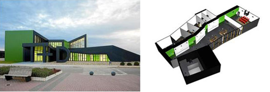
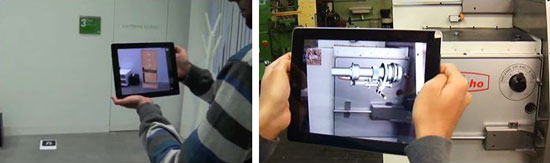
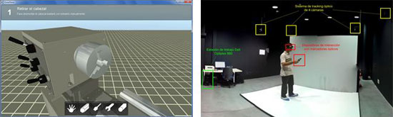

Diego Romero, responsable de la División de Tecnologías Multimedia, y David Abadía, responsable de la línea de investigación en interfaces Hombre-Máquina del Instituto Tecnológico de Aragón (ITA), realizaron una presentación en la pasada edición de Moldexpo 2013 sobre las temáticas de Realidad Aumentada y Entornos de Simulación. Dichas tecnologías permiten una aplicación a los procesos de diseño, así como a la previsualización de las piezas producidas e información sobre las mismas en tiempo real.
La Realidad Aumentada es una tecnología que consiste en integrar información virtual con información física ya existente, superponiendo los contenidos sintéticos (modelos 3D, vídeos, audios, texto) al mundo real y proporcionando así información extra sobre los contenidos reales. Para su puesta en marcha son necesarios varios pasos: capturar en tiempo real un entorno visual mediante un dispositivo que disponga de una cámara (ordenador, tableta, móvil, gafas activas…), analizar dicho para detectar patrones y/o objetos mediante visión artificial y sobreimpresionar contenidos sintéticos digitales (modelos 3D, contenidos multimedia…) en la misma perspectiva.
A lo largo de esta presentación se conocen los conceptos básicos de la realidad aumentada (sistemas de visión artificial, generación de modelos 3D, visualización mediante motores gráficos, dispositivos de acceso y tipologías de realidad aumentada), así como modelos de desarrollo y aplicaciones reales.
Los entornos de simulación permiten la visualización de mundos virtuales donde poder representar elementos así como las interacciones entre los mismos. A diferencia de la realidad aumentada se reemplaza el mundo real completamente por el virtual y las acciones del usuario son transmitidas al mundo virtual. De esta manera se permite al usuario poder visualizar modelos 3D con diferentes grados de inmersividad en función de la plataforma de acceso utilizada.
